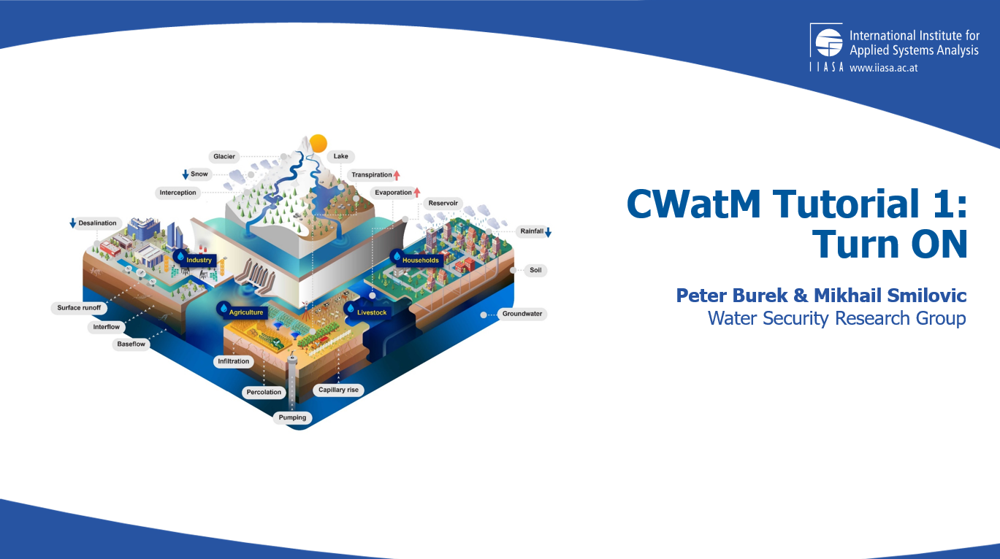
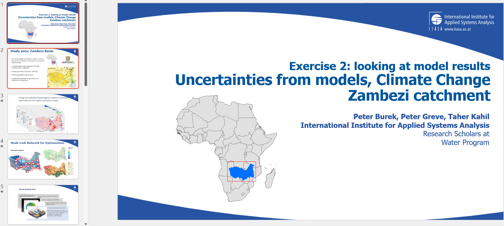
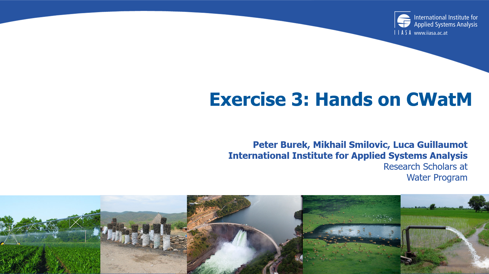
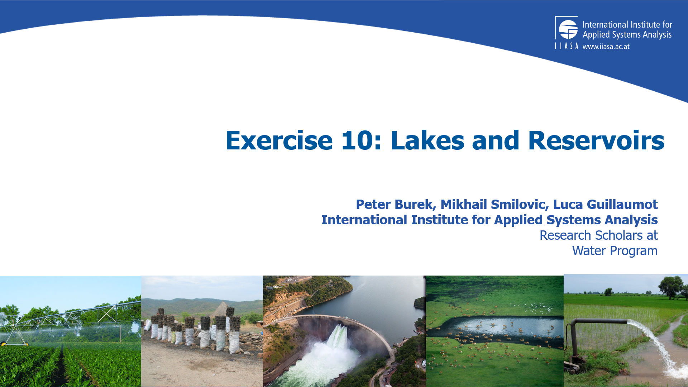
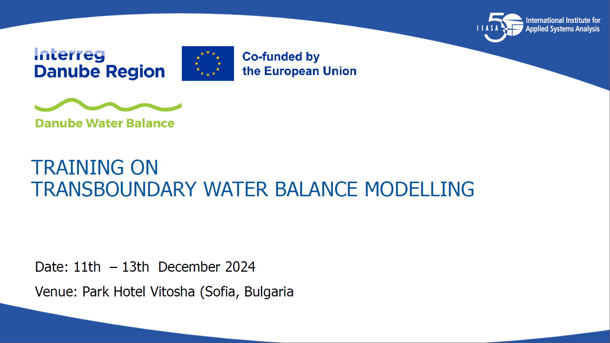
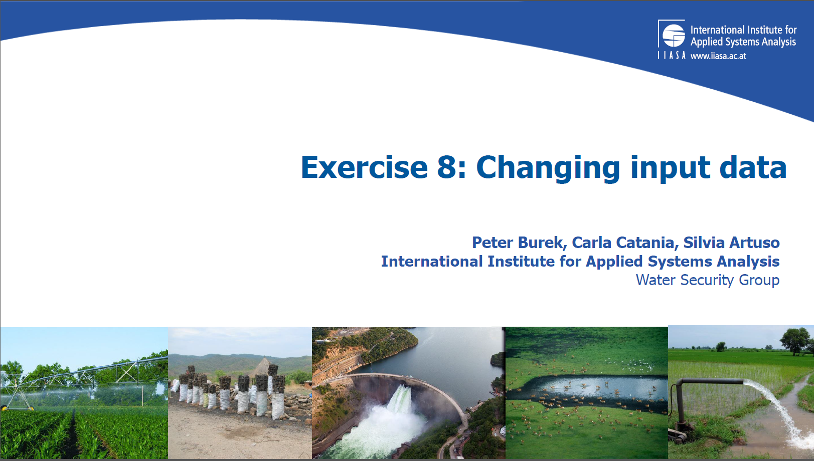

Offline Training¶
Tutorials¶
Our offline tutorial can be found here:
https://github.com/iiasa/CWatM/tree/develop/Tutorials/General
They come with a description and some exercises with settingsfiles
Please have a look at the pdf
Tutorial 1 starts with the structure of CWatM and how to turn it on
{kind=link}

Tutorial 2 shows the example of the Zambezi River Basin - What are the uncertainties?
{kind=link}

Tutorial 3 From here on you start to run CWatM by yourself
{kind=link}

…¶
Tutorial 10 shows how to model lakes and reservoirs
{kind=link}

Danube specific tutorials¶
For the Danube we have a own tutorial. It is produced in the framework of the Interreg Danube project: Danube Water Balance 2024-2026.
https://github.com/iiasa/CWatM/tree/develop/Tutorials/Danube
They come with a description and some exercises with settingsfiles
Exercise0 installing: Installing Python and CWatM
Exercise1 settings: Working with the CWatM settingsfile.ini
Exercise2 mannings: Change something and see the effect (here the routing parameter)
Exercise3 calibration: How to calibrate the model?
Exercise4 rivernetwork: How to change the river network?
Exercise5 crops: CWatM can have different crops. How to work with them?
Exercise6 watercycle: Postprocessing - How to make watercycle plots?
Exercise7 options: CWatM has a lot of options - How to select which one?
Exercise8 meteo: How to work with netcdf files and how to change the input data?
Exercise10 output: CWatM has >500 variables, You dont want to output all of them, but maybe some?
Exercise11 model structure: Inside CWatM - explains the source code structure
Exercise12 reservoirs: How to change the behaviour of reservoirs?
Exercise13 GitHub: Why using GitHub?
This is the starting point:
{kind=link}

And this is for example Exercise8
{kind=link}
